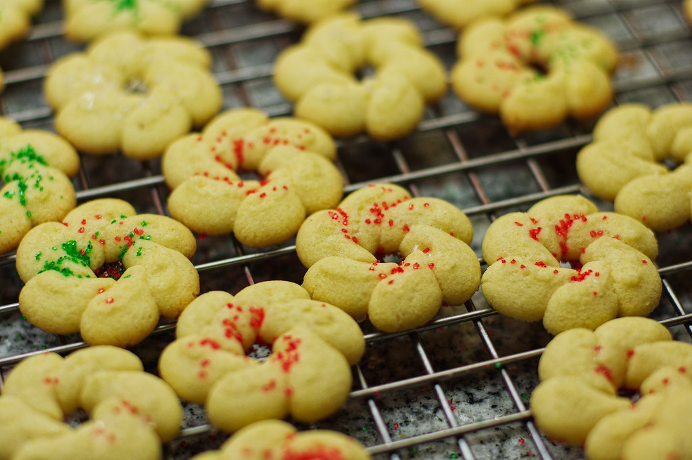

Spritz Cookies

A simple buttery cookie recipe to use with a cookie press.
Ingredients
- 2 1/2 cups all purpose flour
- 1/2 tsp salt
- 1 cup butter
- 1 1/4 cups sifter powdered sugar
- 2 egg yolks OR 1 whole eggt
- 1/2 tsp almond extract
- 1 tsp vanilla extract
Steps
- preheat your oven to 400°F
- sift flour with salt
- cream butter in mixing bowl, gradually adding sugar until light and fluffy
- blend in egg, almond extract, and vanilla extract
- gradually add dry ingredients, mixing thoroughly
- press cookie dough through a cookie press into desired shapes onto an ungreased cookie sheet
- bake for 6-8 min until delicately browned
You can add sprinkles either prior to baking or after if you are icing the cookies.
Home